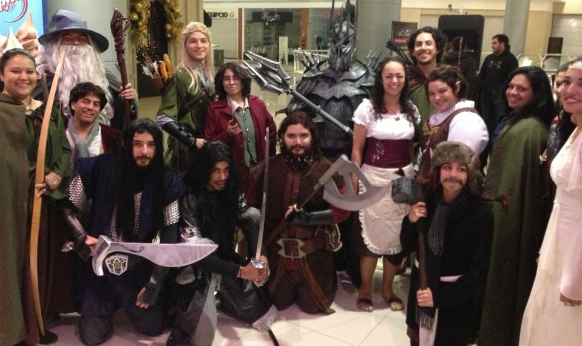
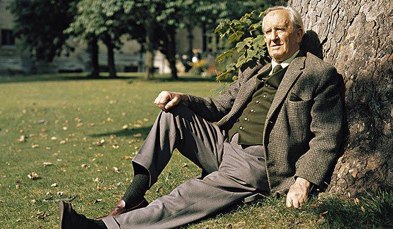

Bienvenue sur TolkienCritics
Bienvenue sur TolkienCritics, le site dédié aux passionnés de l’univers de J.R.R. Tolkien ! Découvre, note et partage ton avis sur tous les livres qui font vivre la légende de la Terre du Milieu.
Notre communauté
Une communauté active de lecteurs et lectrices partage critiques, notes et recommandations pour redécouvrir chaque recoin de l’œuvre de Tolkien. Ensemble, nous gardons vivant l’esprit de la Comté, de Fondcombe ou du Mordor.
Qui était Tolkien ?
J.R.R. Tolkien, né en 1892 et mort en 1973, est l’auteur du Seigneur des Anneaux, du Hobbit et de nombreuses œuvres ayant donné naissance à l’univers de la Terre du Milieu. Linguiste passionné, professeur d’Oxford, Tolkien a inventé des langues entières et créé une mythologie foisonnante, mêlant poésie, histoire et nature.
Son amour pour la nature transparaît dans ses descriptions de la Comté, des forêts de Fangorn ou des paysages de Rohan. Aujourd’hui encore, son héritage inspire des millions de lecteurs et lectrices à travers le monde.
Comment ça marche ?
- Explore notre bibliothèque des œuvres de Tolkien.
- Note les livres que tu as lus et partage ton avis.
- Rejoins les discussions et fais découvrir tes coups de cœur !